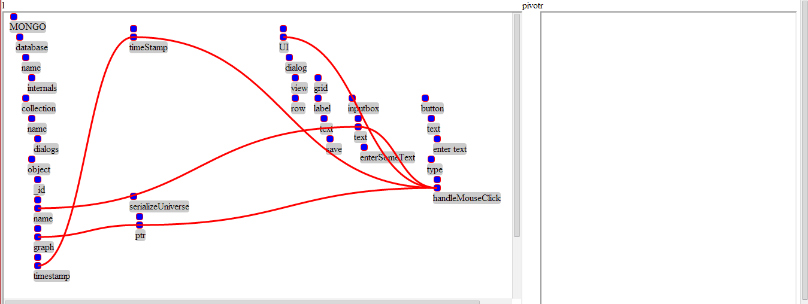
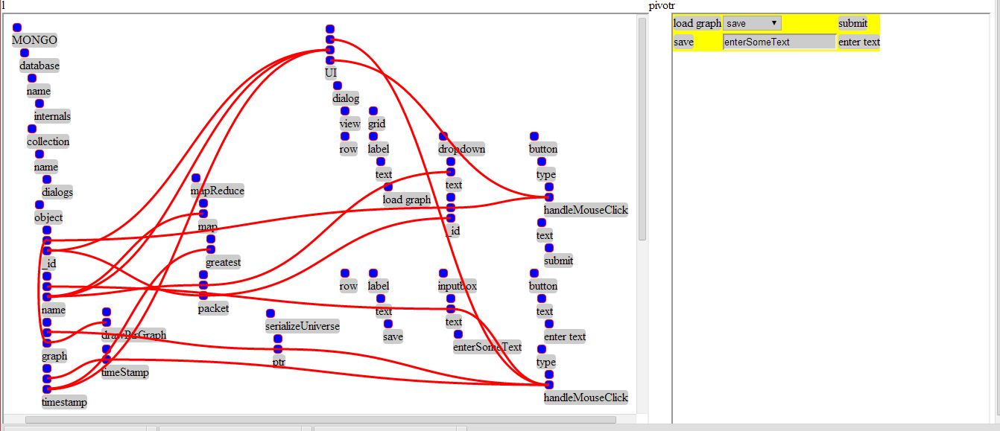

This program is in an extremely experimental stage and has only been tested with Chrome. Just a word of caution, the DB is live, and there is no user auth currently.
http://sethtenenbaum-dmtpoet.nodejitsu.com/
You can build graphs using the visual editor or by using code and JSON.
To create a graph using JSON, create a new Graph object, as such.
var graph = new Graph('ptr') // ptr is the type assigned to graph, for right now, visually editable graphs must be typed to ptr
once a basic graph object is created, you then use the setFromJSON method to create the structure. The best way of doing this is to wrap objects in arrays.
graph.setFromJSON({"obj":[{"obj1":"innerObj"}, {"obj2":"innerObj2"}]})
This will then generate an itemized graph object. This allows a simple method to traverse the object and retrieve a pointer to the subobject.
To access the graph object you then pass it an item ptr list.
It follows the pattern [id, 'item', indexNumber, 'item', indexNumber,...etc...,endpoint]. At the end of the list, a suffix is sometimes appended to to get more information from the object. This could be the index of which the graph linking occurs within, or information from the graphics renderer object. An example suffix would be 'index', 0, or 'gfx', x. The idea is that the objects can be accessed predictably and efficiently.
var innerObj = [graph.id, 'item', 0, 'item', 0, 'item', 1, 'index', 0];
// to create a reference to the object's index ...
var innerObjLink1 = [graph.id, 'item', 0, 'item', 0, 'item', 1, 'index', 0]
Albeit this example probably has no real usefulness, linking the two prior objects together would look like this
Graph.prototype.connect(innerObj, innerObjLink1);
The reason for doing this is that you can create complex behaviors based on the combination of phrase routes. In the phrase iteration phase, each object is associated to a program class. This class is determined by the first object in the hierarchy of the object. In our example, this would the 'obj' program. This obj program will then be called pointing to the sub object 'innerObj' and 'innerObj2' respectively. After this object does what it needs to do, it then passes the information to the next object. This chain will keep getting called until a root node is discovered or end of phrase is reached.
What makes this graph unique is that there are no input and outputs. It's up to the object's program to determine the situation. This simplifies the graph greatly, because in most cases, the last object before the root node will always store or set data, and everything else is either querying or getting data-- Storing data into a dropdown, input box, database, or anything else really. To handle errors or manage returned data after creating or modifying data, add another object program and set that to be a root node. That will effectively end the chain, and create a new one.
The user interface is pretty simple. Click anywhere on the left window, and a dropdown will popup. From there, you can model your objects. Clicking on 2 index areas will join the graphs together. Clicking on an object will also open up a menu. The objects can be dragged around and about.
Briefly explaining this next example with the UI, serialize, Mongo and timestamp modules, a css table and a set of lists within a table can be generated. The generated UI is shared with the UI module.
After the UI menu gets built, the point's next() function gets bound to the button's onMouseClick event which then triggers the graph traversion. The timeStamp program receives the click and generates a time stamp, the serialization 'ptr' reflects the graph type, and the name is retrieved from the inputbox. Since the database has no more connections, the end phrase dilimeter is assumed, and it saves the data.

After youre done drawing up your graph, you just click the origin node, and select evaluate. In this case, the originating node is UI. The playground area to the right is really for testing this stuff out. Ideally, the goal is to generate an entire content management system where the area to the right would be what the user who visits the site would see.The UI module is pretty simple, it just defines the different types of list rendering. Either you can display the list of data as a table, or you can display it as a simple list. The lists get defined as attributes in the DOM, which get managed by the CSS selectors. If you look into the graph.css, you can see all the different attributes that get applied from the interface.
[gridtable =table] {
display:table;
padding:0px;
}
[gridtable=row] {
display:table-row;
padding:0px;
}
[gridtable=cell] {
padding:0px;
display:table-cell;
}
In the next example you can see a combination of load and save graphs.
Currently, you can reduce based on greatest time. Other paramaters soon to come.

this.next() will move the iterator to next object. In order to deal with connecting multiple objects together within multiple parameters, there is a deferred fulfillment policy which sections off the interaction. Once all the interactions occured in the scope of the phrase, the program then gets executed. Right now, an array gets sent to the program which then operates on all the adjoining linkages.
Modules must be templated to contain a prototype.evaluate method, as this gets called from the basic template. Event registration is another option. That would allow triggers such as 'paramPointOver' and 'paramPointsCompleted'.
Currently, all the point modules are actually stored in the site/point.js file. This is where the bulk of the work really went into, figuring out how to deal with some of the subtleties.